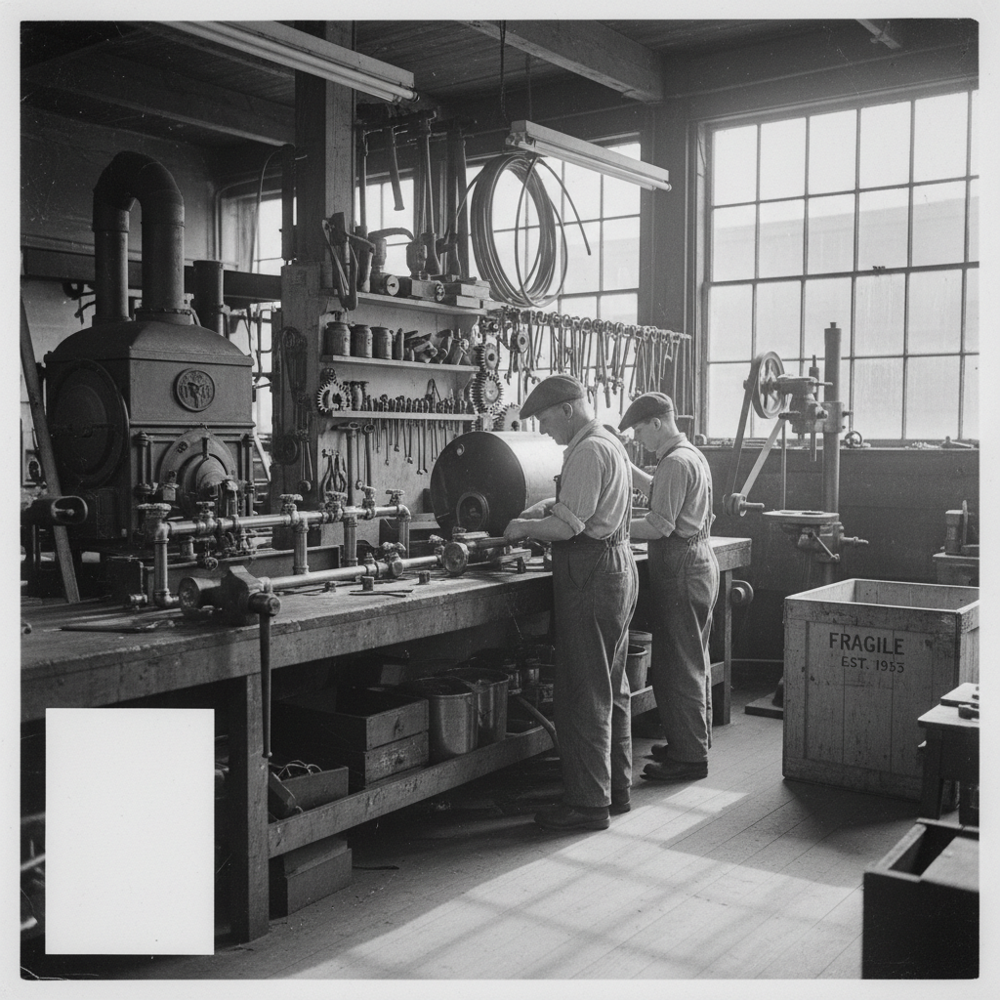
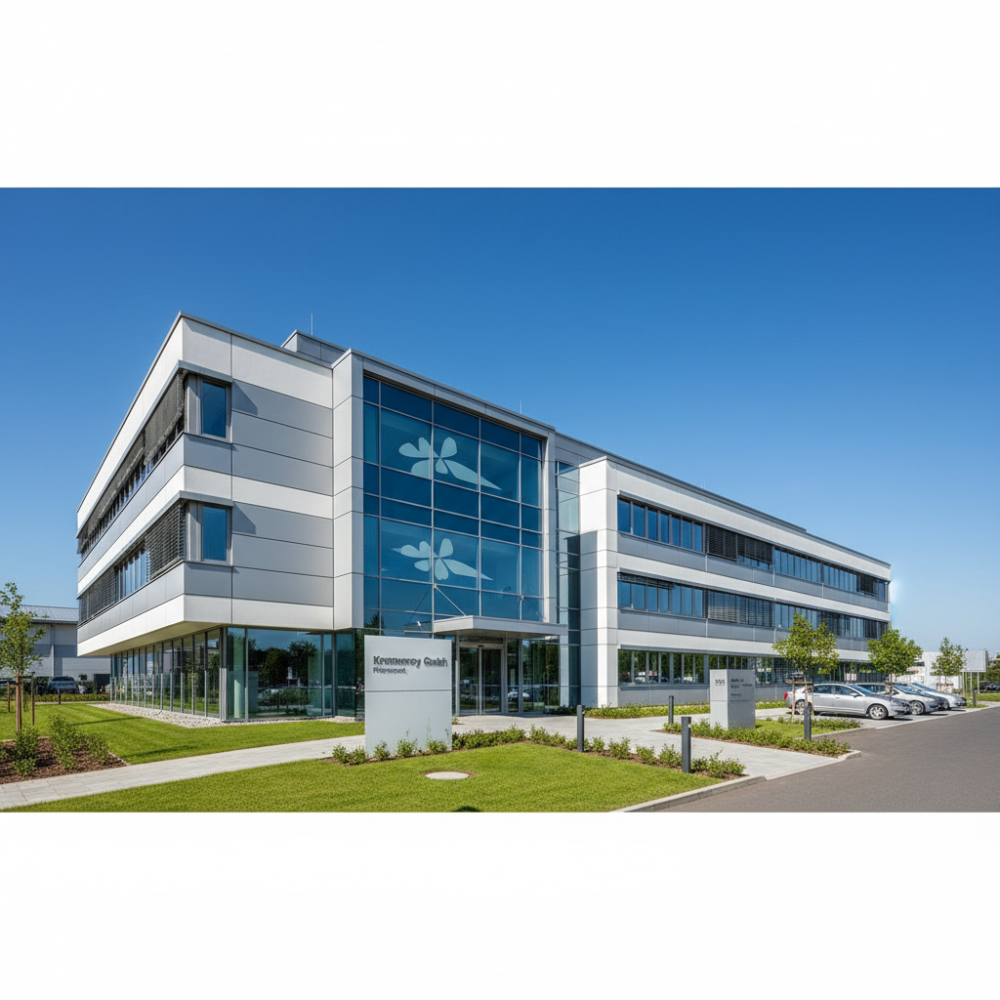

Krummrey GmbH: Seit 1955 für Sie da.
Tradition, Innovation, Handwerkskunst – Ihr Meisterbetrieb in Pößneck mit Herz und Verstand.
Unsere Geschichte entdeckenEine Geschichte voller Handwerkskunst
Die Krummrey GmbH blickt auf eine lange und erfolgreiche Geschichte zurück. Seit unserer Gründung im Jahr 1955 haben wir uns stetig weiterentwickelt und sind stolz auf unsere Wurzeln, die uns zu dem gemacht haben, was wir heute sind: Ihr zuverlässiger Partner.
Gründung durch Walter Krummrey
Der Grundstein für unseren Meisterbetrieb wird gelegt. Mit viel Engagement und handwerklichem Geschick beginnt unsere Reise in Pößneck.

Übernahme durch Thomas Krummrey
In zweiter Generation wird das Unternehmen erfolgreich weitergeführt. Thomas Krummrey bringt frische Impulse und festigt die Position als Innungsfachbetrieb.
Umzug in neues Betriebsgebäude
Ein moderner Standort im Gewerbegebiet Pößneck/Ost mit integrierter Badausstellung wird bezogen. Ein wichtiger Schritt für Wachstum und Servicequalität.

Ihr zuverlässiger Partner
Wir verbinden bewährte Tradition mit zukunftsweisenden Technologien und sind stolz darauf, die Region Pößneck mit erstklassigen SHK-Lösungen zu versorgen.

Unser Team & unsere Werte
Unser Erfolg basiert auf einem starken Teamgeist und gemeinsamen Werten. Mit 16 gewerblichen Mitarbeitern, 3 engagierten Lehrlingen und 2 Büromitarbeitern setzen wir uns täglich für höchste Qualität und Ihre Zufriedenheit ein. Jeder Einzelne trägt dazu bei, Ihre Projekte mit Leidenschaft und Präzision umzusetzen.
Wir glauben an kontinuierliche Weiterbildung und fördern unsere Mitarbeiter, um stets auf dem neuesten Stand der Technik zu sein. So stellen wir sicher, dass Sie immer die bestmögliche Beratung und Ausführung erhalten.
- Qualität: Wir liefern präzise und langlebige Handwerksarbeit.
- Zuverlässigkeit: Auf uns können Sie sich verlassen – termingerecht und verbindlich.
- Kundenzufriedenheit: Ihre Wünsche stehen im Mittelpunkt unseres Handelns.